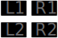

Aquanaut's Holiday: A holiday without goal
"This is a game with no set goals, no rules and no end. This is a game of exploration and discovery. Before you lies a whole undersea world, a world of beauty and tranquillity. Take your time, wander around and enjoy the fabulous sights."
Part 1: "Aqua... who?"
Aquanaut's Holiday is a game developed and published by Artdink for the original Sony Playstation. Released in Japan in June 1995 and later the next year in the West to positive and mixed reception, Aquanaut's Holiday is quite an interesting game. As far as i know, it was one of the first games which called itself a "Game without a goal". Aquanaut's Holiday was made by Kazutoshi Iida, who is known for his work on games like Doshin the Giant, Tail of the Sun and even LSD: Dream Emulator.
Iida's work has always been so fascinating to me. Doshin the Giant for example still remains as one of my favourite games of all time, thus it wouldn't be far-fetched that I would be interested in his other works as well.
I've recently acquired my copy of Aquanaut's Holiday on Ebay for a little over 60€ with shipping included, which was a crazy good deal! I've actually seen most copies online go for around 110€. This copy is in pretty good condition too, so 60€ is quite a steal! So i went ahead and decided to buy it. A few days went by and on the 9th of January, it arrived! I could now proudly consider myself as an owner of Aquanaut's Holiday!
AND I WILL TAKE THAT TITLE TO MY GRAVE!
European boxart of Aquanaut's Holiday
Game disc on the right and manual on the left
Aquanaut's Holiday is a game about relaxing, zoning out and exploring the beauty of the underwater world. The game's manual tells the story of a world-famous marine explorer who's been feeling really burned out recently. Their work has had a major positive effect on the ocean life. However, the immense stress of their work as a marine explorer is nearly making them fall apart. One day, one of their bosses made them an offer. Their task is to discover an uncharted location in the ocean. With no deadlines. No set rules. Nobody to command them around. Yust them and the endless blue ocean...
Part 2: "So, what do you do in a game with no goal?"
The player takes control of a submarine called the Holiday. This is where the player will spend most of the time in. Once the game starts, you will find yourself in front of your underwater base. From here you can descend into the deep blue and start your underwater exploration adventure. You can do whatever you want on your journey. "This is your Holiday!". From discovering and interacting with a diverse array of fishes and corals to finding abandoned and abstract structures, your adventure may pack a lot of surprises. Maybe you will even find yourself in the shade of an octopus's garden! who knows!
The controls are fairly simple.
Button: Forward
Button: Backward, brake
Button: Ascend
Button: Descend
Button: Move submarine
Button: Select a command
Button: Execute command
 Buttons: Play sonar sounds
When you come across a swarm of fish on your journey, you can interact with them little fishies by using one of the Buttons, to play one of four sonar sounds. However, some fish may react differently to some sounds than others. While some fish may find one sound quite pleasing and start swimming in circles out of pure excitement, others may get scared and flee. The manual also tells the player to experiment a bit by combining multiple sonar sounds to get different results. I actually don't notice any big difference by combining the sounds, but maybe i am just doing it wrong no idea!
Once you are done exploring for the day, you can return to your underwater base by selecting the "Return" command using the Button. Once inside the base, you can select from a few options.
Base menu
System: Save, load or quit game.
Build reef: Build a reef using coloured blocks.
Point view: See, what parts of the map you've discovered and what's still uncharted territory. You can also see the buoys you've placed so far on your journey.
Leave port: Hop back into the submersible and start exploring.
The Point View menu shows you, what parts of the map you have explored and which you haven't. Uncharted territory is marked by the empty squares. The map also shows you where and when you've deployed a sonar buoy in the ocean.
You see, the Holiday is equipped with sonar buoys, which the player can deploy by selecting the sonar buoy command with the Button. Sonar buoys can be used to mark interesting landmarks, so the player can revisit these landmarks more easily. When selecting a buoy in the Point View menu, the player can choose to jump to the selected buoy, which will spawn the player directly next to it. There can be a total of 256 buoys in the ocean at a time.
"Point View" menu. The green Mark seen on the left indicates a sonar buoy. The mark's colour can be changed using the Buttons.
As you progress in Aquanaut's Holiday, the player collects coloured Blocks which, according to the game's manual, are made out of organic waste. Using the Build Reef option in the Base menu you can use the blocks to build structures on a diagonal grid. By building the reef you will see that more and more fish start appearing in the ocean. The coloured blocks each attract different types of fish, so get creative and start building!
A tower-like structure i built. The upper line on the bottom half of the screen represents the amount of blocks you have available. The other one represents the size of the fish colony. Once it reaches 100% you unlock a new mode where you can play as a fish!
Button: Place Yellow block
Button: Place Red block
Button: Place Blue block
Button: Remove block
Once placed, the structure can also be seen in-game on the large empty spot of land in front of your underwater base.
As stated earlier, while exploring the vast seabed of Aquanaut's Holiday, you may not only just come across a colourful swarm of fish or a formation of corals. You may even come across some weird landmarks. Here are a few that i was able to find:

Part 3: That part with the conclusion
I love weird and obscure games!
Weird and obscure games freaking rock and games like Aquanaut's Holiday are right up my alley!
There's just something so fascinating about picking up a game and getting to experience it without having to worry about any goals. You can just sit back, relax, maybe even grab something to snack or to drink and dive into a whole new world. Aquanaut's Holiday is a perfect example of these kinds of games!
You get to experience an uncharted part of the ocean all on your own without any major goals or any set time limit. I had a great time with this game and i am sure if you enjoy games like LSD, you will have a great time too! The controls haven't aged that well and it will feel a bit weird at first, but you will get used to it.
It's quite a relaxing experience and in my opinion definitely worth checking out!